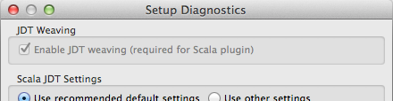
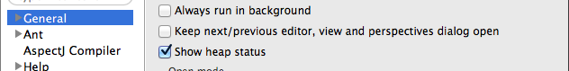
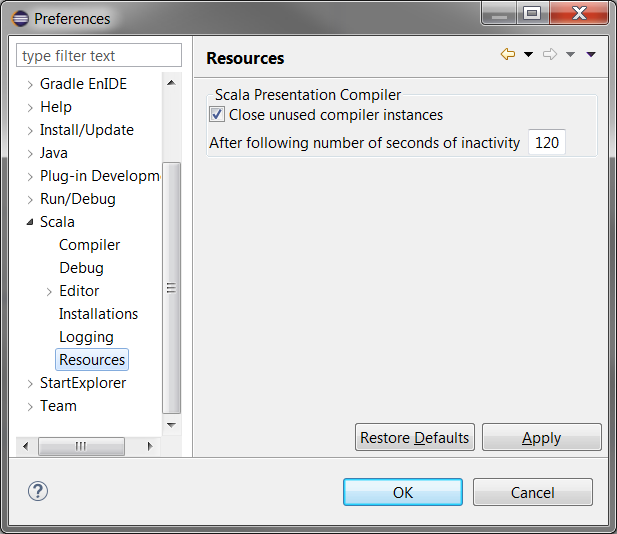

Advanced Setup
This page contains information to help you configure Eclipse and Scala IDE, to increase performances and ease-of-use.
Scala Multiple Installation Support
Scala IDE now supports projects set up for several major versions of the Scala compiler.
Why multiple versions ?
The Scala IDE has a strong dependency on Scala : it comes deeply embedded with an interactive version of the compiler, called the Presentation Compiler, that it uses to do all the interactive work on your code: completions, errors as you type, semantic highlighting, etc [1].
So far the Scala IDE was therefore built on and for a specific version of the Scala Compiler. For editing 2.10 projects, you had to have a version of the IDE compiled for Scala 2.10. For 2.11, you had to have a version compiled for Scala 2.11. This led to users working with both 2.11 and 2.10 projects to have two installations of Eclipse, with different flavors of the Scala IDE plugin installed.
This also constrained us developers: since most of the IDE’s source code had to pass compilation with both 2.10 and 2.11, it was impossible to remove some obsolete things, led to some regression headaches, and made us maintain two parallel branches for the source.
With this multi-version support feature, we want to use a single version of the IDE, built on the latest version of Scala, to handle both “modern” projects built using 2.11, as well as “legacy” projects built with 2.10.
It will also let us retire the 2.10 branch of the IDE builds, focusing the efforts of our small team on one branch, and letting us deliver features to our users faster.
Scala Multi Version Support
The gist of it is the following: the IDE is, as of its 4.0.0 release, a
2.11 build. The Presentation Compiler it ships with is a part of Scala
2.11. But its typechecker can run with a specific option,
-Xsource:2.10 that lets it work on 2.10 source files. That’s now a
standalone scala compiler option,
by the way — though please note it only affects up to the typechecker
phase [2].
So, if you are working on a 2.11 project, nothing changed — this is business as usual. If you are working on a 2.10 code base, a few tweaks and settings may be needed, though the IDE will try to help you.
All you may need to do, then, is to tell the IDE how to deal with your Scala 2.10 project. For that you need to align a few things:
- a setting of compiler options
- a consistent classpath
- in particular, a compatible Scala classpath container within it
- and optionally, a custom Scala Installation
All of this is brought to you by a single toggle, that we will deal with first, so that those of you in a hurry can start hacking.
Source Level
To configure a new, fresh project for 2.10 compatibility, you have to go to project-specific settings: the platform’s default is still to consider that projects are based on Scala 2.11 [3].
Here’s what you’ll see:

You can now toggle project-specific settings and look at the drop-down just below it. It displays a list of versioned Scala installations that should include (at least) both a 2.10 version and a 2.11 version. Some are labeled as dynamic, others as fixed.
Here’s an example:

The meaning of a fixed version is just that: if you select any fixed version, your project will be type-checked with that particular version of Scala, for as long as the IDE can find it [4].
The meaning of a dynamic option is that it will get updated in a binary compatible way as we ship updates of the IDE through Eclipse update sites. You have the insurance that if you choose a dynamic 2.11 version, what will be used is the latest available 2.11 installation the IDE ships with [5].
That’s it ! Now once you select one of these options
(hopefully a
2.10 installation, since this is what we’re here to do), you
will not see any changes to other compilation options. But if
you subsequently reopen compiler settings for that project,
you’ll see that the -Xsource:2.10 -Ymacro-expand:none string has
been added to your compiler settings:

Note that if you decide to revert that change and come back to a 2.11 configuration, the IDE will look closely at your project’s compiler settings as compared to workspace-wide settings. If just removing scala-version-related makes your project configuration equivalent to workspace settings, it will automatically revert the project-specific toggle. your project will again be ruled by current workspace-wide settings.
Also, note this setting will not affect what your projct is built with. What your project runs on is, as usual, the compiler it finds on classpath. But what is actually found on classpath may vary according to your project’s specific settings [6].
Multiple Scala Installation Settings at once
Many of you have multiple projects which version they want to switch quickly, without having to open project preferences for each project. So, choosing a Scala Installation is now a multi-select action: just choose your target projects, right-click, go to the Scala menu, and choose ‘Set the Scala Installation’, as below.

Scala Installation detection
The IDE will try to understand what version of Scala your project is designed to work with. It does this by looking at your resolved classpath. A resolved classpath means “expanded until it explicitly contains just paths to existing files” [7]. Files in that classpath will possibly contain a scala-library jar, in which we know where to look for a version, or other, external jar files which filename might hint at a Scala version.
If we detect a 2.10 scala library, you’ll see the following error marker appear in the problems view:

If you try to quick-fix this error (by pressing Ctrl+1 or right-clicking and selecting Quickfix), you’ll see the following dialog:

Opening Project Properties here (by clicking Finish) is equivalent to doing it through menus, you can then toggle project-specific compiler settings if necessary, and set the correct compiler flags.
A similar dialog will pop up if you have external 2.10 libraries show up in your classpath.
Now, if you have a project that was created in Eclipse, or if you are working on a project which Eclipse configuration has been generated in the past with sbteclipse, you may notice that those dialogs do not appear. This is because your project is using a Classpath Container.
Basically, classpath containers are an indirection in your classpath that is elaborated by the platform Eclipse using settings. They’re the technical notion behind the Eclipse feature named user libraries.
Your project’s physical representation contains a string (a classpath container path) in its classpath, that Eclipse resolves depending on its own settings and context [8]. This has been the way Scala projects in the IDE have been dealt with so far: your projects contained that indirection as a pointer to a Scala compiler. That pointer was resolved to whichever version of Scala the current Scala Plugin had been bundled with, so that as you updated your ScalaIDE plugin over time, your projects were always built with the latest version of the scala compiler embedded with the IDE.
As of now you have access to the content of the Scala Classpath Containers. First of all, choosing a project-specific scala installation in compiler settings, as discussed above, also sets the classpath container. You can witness that by expanding your project in the Package Explorer. Here’s how it look for our test project, set to use the latest 2.10 Scala above:

You’ll notice this is not the generic 2.11 container you would get with a fresh new (and therefore 2.11) project. You can also see that in the Java Build Path preference page in the project settings:

You can also edit this classpath container, by right-clicking in the Package Explorer view, or by clicking Edit on the Java Build Path Preference page.

Choosing a particular installation here will have the same effect as choosing a particular Scala Installation in the project’s compiler settings, as outlined above. In fact, if you reopen your project’s settings after applying that classpath container change, you’ll notice that the settings for your installation and use of project-specific settings have changed appropriately.
Note that if you decide to write a plugin, or do something that depends on the scala compiler as opposed to just the scala library, you may want to add another specific container to your classpath: the Scala compiler. This is possible thanks to the (usual) Add Library menu of the Java Build Path page. Here, the Scala Compiler choice will take you to a window very similar to the above.
Beware this choice will also have an impact on your choice of Scala installation and associated compiler settings. In fact, to make sure that the compiler and library container settings would not get out of sync, we had to make sure that classpath container edition should not fire if you have both Scala-library and Scala-compiler on classpath. The best way to proceed is from a project’s choice of Scala Installation, which cascades to classpath containers — and a link will guide you there if you try to modify such a classpath container directly anyway [9].
This will let you have a project which classpath is managed the way your choice of Scala Installation is : a fixed set of jars if this is what you choose, or the latest flavor of your favorite compiler (whether 2.10 or 2.11), in case you select a dynamic installation.
But so far, we have only seen how to manage the pre-installed, embedded versions of the scala library and compiler. How about dealing with custom, personal installations of Scala that you may want to use in conjunction with your project ?
BYOS (Bring Your Own Scala)
If you want to use a custom version of Scala with your project,
there has always been the option of having a manually-managed
classpath. You can either use the Add External Jars function
for the Java Build Path preference page to set up your
scala-compiler and/or scala-library (etc) jars, or you could use
sbteclipse with the EclipseKeys.withBundledScalaContainers:=false
option, which copies exactly the settings resolved by sbt.
But using this is tedious, and it’s per-project. Or perhaps your project does not have an sbt build. How about setting a custom, workspace-wide installation that your projects can then reuse ?
This is what you can do from the Scala Installations preference page. You will find it in the preference dialog for the workspace.

Notice how there is no notion of dynamic or fixed represented here: those notions are relevant for a choice of Scala Installation when you configure a project (dictating how that choice will be realized accross upgrades). Those are just the installations that are available to your IDE at the moment.
There you can add and remove an installation according to your needs. So far, the dialog prompts you for a directory, which should contain all your jar files, at the root of the directory. Those should comprise at least of the scala-compiler and scala-library jar. If there are source jars in that directory, the IDE will also try to incorporate them in the installation. It will also try to find extra dependencies such as scala-reflect.
It will try to do a best effort to understand the version of your installation given what we know of how such jars are produced by the compiler build [10], and try to check those jars’ versions are consistent with each other.
Let’s now try to add an installation from the ~/.sbt/boot
directory, a place where sbt stores the scala jars it requires to
boot.

A dialog then comes up asking for a name: this name gives you the option of labeling a custom installation with a tag that is easier to find in all the dialogs above, or even to have several names for a given choice of jars.

You can now see your installation listed in all relevant dialogs mentioned above, and you can select it in Compiler Settings.

Note that any scala installation created in that custom manner is necessarily fixed: dynamic installations vary following upgrades of the Scala IDE packaged compilers, and we would not know what to upgrade such a directory-based scala installation to.
You may also find it constraining to have your scala installation set as a bunch of jars at the root of a directory. But it should be possible to convert any setup of a scala installation to a suitable directory by using symbolic links.
Besides, we firmly intend to implement more ways of defining a custom scala installation for use in your IDE. If you have a preferred way (explicitly choosing every jar ? looking at your maven/ivy cache ?), please let us know.
Finally, note that so far, we only support Scala Versions
posterior to 2.10.0. Indeed, the -Xsource flag only knows so
far how to run both in 2.11 (normal) and 2.10 (compatibility)
modes. But it no longer knows about old typing ways of the past.
| [1] | One important exception to this is building, which is a batch-mode task that can be delegated to another piece of byte code. |
| [2] | In other terms, there’s no way for you to generate class files for a 2.10 code base using a 2.11 compiler and this option. |
| [3] | If you are dealing mostly with 2.10 projects, you may be interested in the 2.10 flavors of the Scala IDE. |
| [4] | The IDE will not lose Scala installation during normal operation, or through upgrades. But that may occur if you remove files on your disk, or explicitly remove components (bundles) of your IDE installation. |
| [5] | This is only valid for built-in versions: a dynamic installation choice will never resolve to a custom Scala installation. |
| [6] | Notice that this means that the expansion of white-box macros is not currently possible in the compatibility 2.10 mode. Indeed, macros have known important recent developments between 2.10 and 2.11 which makes type checking compatibility between the two extremely difficult. If you have a significant project that uses 2.10 whitebox macros, you may want to look at 2.10 flavors of the Scala IDE.</div> |
| [7] | We’ll see why and how a classpath might not be expanded in a moment. |
| [8] | Note that this is also the way, in its default operating mode, that sbteclipse generates ScalaIDE configurations. If you want sbteclipse to generate an explicit classpath, preserving the scala version sbt would have chosen for you, you can set the option withBundledScalaContainers to false. Scala-IDE will then figure out wich version of scala your project is using from its classpath, and configures itself correctly based on that. More details on using it here. |
| [9] | If you need to know, the issue here is on refreshing the Java Build Path window, rather than modifying both classpath containers in the background. We’d be very eager to receive a contribution from an Eclipse expert on that point ! |
| [10] | Technically, we use the library.properties file of your scala-library jar. |
Multiple Scala Version Support
Do you have projects configured to use a legacy version of Scala ? Head over to the Multiple Scala Version Support page.
Eclipse Configuration
The default Eclipse heap configuration is often inadequate for the Scala IDE. It is strongly recommended to edit the eclipse/eclipse.ini (eclipse/Eclipse.app/Contents/MacOS/eclipse.ini on Mac osX) file and add the following lines to increase various heap limits and virtual machine options:
--launcher.XXMaxPermSize
256m
-vmargs
-Xms256m
-Xmx1024m
-XX:PermSize=64m
-Xss1M
-server
-XX:+DoEscapeAnalysis
One recent Oracle JVM, the following might also be beneficial:
-XX:+UseConcMarkSweepGC
As is the following on Oracle 64-bits JVM:
-XX:+UseCompressedOops
Required Preferences
JDT Weaving
Scala IDE uses AOP to tweak the Eclipse JDT, so JDT weaving has to be enable. Otherwise, Scala files would be managed as Java files.
It is set in the
JDT Weavingsection of Scala Setup Diagnostics dialog [12]. JDT Weaving should be checked (and disabled, to prevent accidental changes). If it is not the case, click to enable it.
Optional Preferences
Heap Status
When the memory usage nears the limit, the Garbage Collector activity increases (when the compiler runs, ...) and system slows down. It is good to keep a eye on the heap status. It is possible by enabling
Show heap statusin theGeneralsection [11].Limit Simultaneously Open Editors
Having too many editors open can claim a lot of memory. Unless you are an exceptional multi-tasker or you use a task-focused interface such as Mylyn, you may want to limit the number of simultaneously opened editors in the
Generalsection [11]..
Deactivate Automatic Java Content Assist
Since Scala-IDE is built over JDT, the Java Content Assist is enabled by default for Scala files, even though it is not relevant for Scala language files development. You can safely deactivate it if most of your edition is done in Scala files.

Note
Naturally, if you have a mixed Scala/Java project, this may not be a good idea : proceed at your own risk.

Activate Completion
You should enable completion however — and you may even want to activate word proposals, if you don’t want to have to hit several shortcuts to complete what you type.
Performance
Garbage Collection activity and swap can be really bad for performance. It can trigger Eclipse freezes and cuase a general system slow down.
Monitoring what is happening is the best option to keep a healthy system:
- to monitor CPU and swap, use your native system monitor (some of the other system monitors are big resource users themselves).
- to monitor Garbage Collector activity, use visualvm on the eclipse instance. It is a profiling tool provided with jdk 1.6.x. It is possible also to get a feel of the memory usage with the heap status bar Optional Preferences in Eclipse.
Depending of the problem, the memory allocated to the JVM can be increased, or some of the other application closed (like the web browser, or some flash application, ...).
Memory consumption new
The Scala IDE for Eclipse uses the Scala Presentation Compiler which provides semantic features such as live error markers, inferred type hovers etc.
Each project has its own presentation compiler instance working in a separate thread. It is created after importing or opening a previously closed project, as well as when you open .scala file or type something and a presentation compiler didn’t exist at a given moment.
In the case of complex projects with many dependencies, each presentation compiler can consume a lot of memory. Therefore, there’s a special mechanism which can close presentation compilers automatically. It can do that when a given project still exists in a workspace, but when the user hasn’t edited its code for a long time and there are no opened Scala Editors for the files managed by given presentation compilers.
You can specify a length of inactivity in seconds, after which the presentation compiler can be closed. Note that the presentation compiler will have to be recreated, when you will open the first file for a project. This can cause a small delay but in most of cases it shouldn’t be significant - up to several seconds in the case of big projects. After that there are no other noticeable effects.
Suggested interesting keyboard shortcuts
You may want to head out to our Suggested Shortcuts page to get a list of shortcuts that will speed up your Scala development.
Additional Links
- Optimizing Eclipse performances from Normation.
- What are the best JVM settings for Eclipse? from Stack Overflow forum
- My Eclipse Setup from davidB
Footnotes
| [11] | (1, 2) The Eclipse preferences are accessible using Windows → Preferences (or Eclipse → Preferences on Mac OS X). |
| [12] | The Scala Diagnostics dialog is accessible using Scala → Run Setup Diagnostics. |


{kind=link}
{kind=link}
{kind=link}